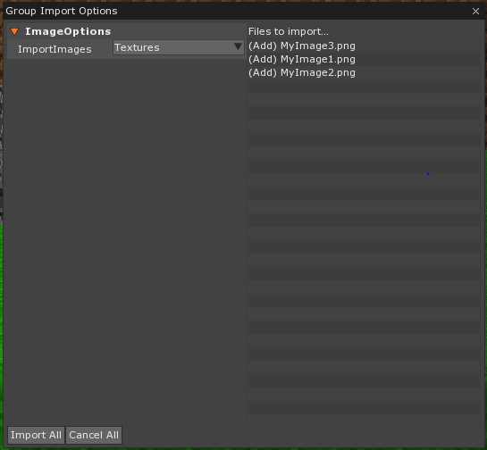
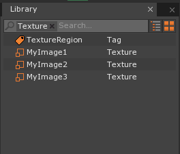
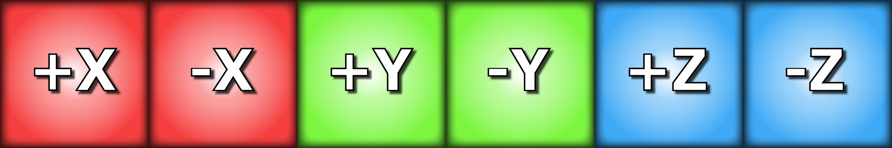
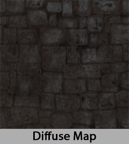
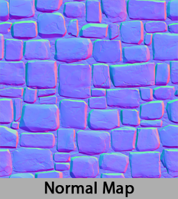
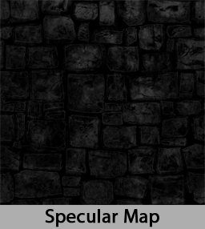

Textures
Textures are a special type of image used to render 3D graphics. It’s commonly mapped to meshes, particles and surfaces and it controls different aspects of rendering through colors, normals and masks and more.
Textures are not a final picture of the object; they are inputs that, when combined with lighting and other visual effects, produce a variety of graphical results. One of the most important aspects of textures is the ability to be drawn at different sizes efficiently. This is accomplished through Mipmapping and Texture Filtering.
Importing Textures into Zero
- Drag and drop one or more images files into the main viewport.
- In the Group Import Options window
- On ImportImages select: Textures
- Click Import All

Now your textures have been added to your Resource Library.

Note
- Zero only supports images up to 4096 x 4096 pixels. If a larger image is imported, Zero will clamp it down to its maximum size.
- Due to Mipmapping and compression, it is highly recommended to use images with powers of 2 proportions. They DO NOT need to be squares, however.
- Zero supports the following image types:
- PNGs: Lossless and compressed. We highly recommend that you use it.
- TGAs: Lossless and compressed.
- TIFs: Lossless and compressed.
- PSDs: Lossless but large in file size.
- JPGs: Lossy. We do not recommend using it for final assets.
Texture Builder
The Texture Builder is a collection of settings used to convert your image file into a texture that’s suitable for the game. They can be accessed by clicking on the texture in the Library Window.
Texture Types
- Texture 2D: Standard 2D texture.
- TextureCube: A cubemap consisting of six faces used for a SkyBox and Reflection. Images will be read as a series of faces as illustrated by the image below.

RGB Usage
- Color: Represents the surface diffuse color of objects or colored images.
- Normal: Used to add detail to models. Generating Normal Maps are a complex process done by a variety of tools. We recommend using XNormal.
- Mask: Used to control a variety of parameters on lighting models and shaders. This includes Specular Maps, Gloss Maps or any other weighted value.
  
Alpha Usage
- Transparency: Used to render transparent images. This requires a special material block called Transparency.
- Mask: Used to notify Zero that the has its specular map embedded into the alpha channel of the image.
- Unused: This option forcefully discard all transparency in the texture in the interest of saving memory.
Compression
By default, Zero performs an operation called Block Compression on all textures. While this can reduce image quality it greatly reduces memory usage allowing it to be rendered faster. This setting should not be disable unless color accuracy is extremely important. For more information on this topic we recommend this article.